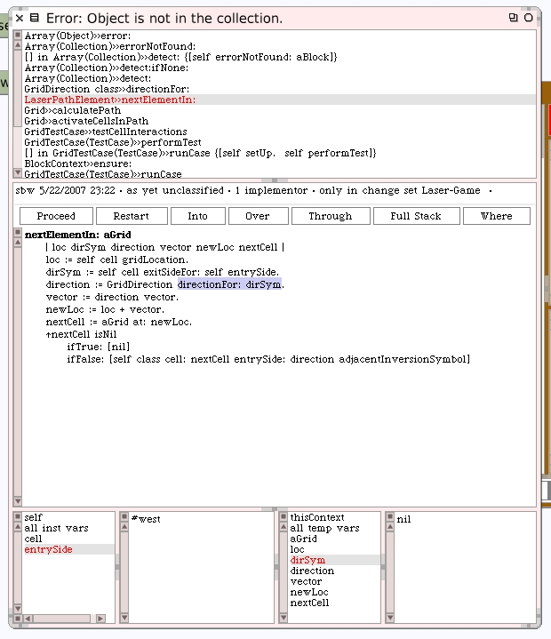
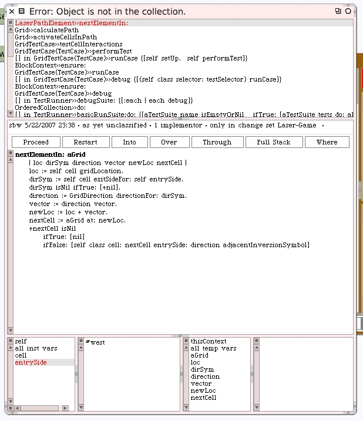
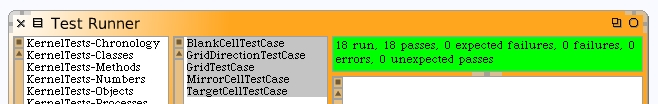

There's a bug. The last cell contained in the last element of our laser's path is the Target Cell. The value for entrySide is #west and that looks correct. The value for the exit side (dirSym) is nil and that's also correct for the target cell.
Change the #nextElementIn: method so that it answers nil when the exit side symbol is also nil.
If you restart the debugger and proceed, and then rerun the unit tests, everything now passes. We have a correct laser path in our grid.
